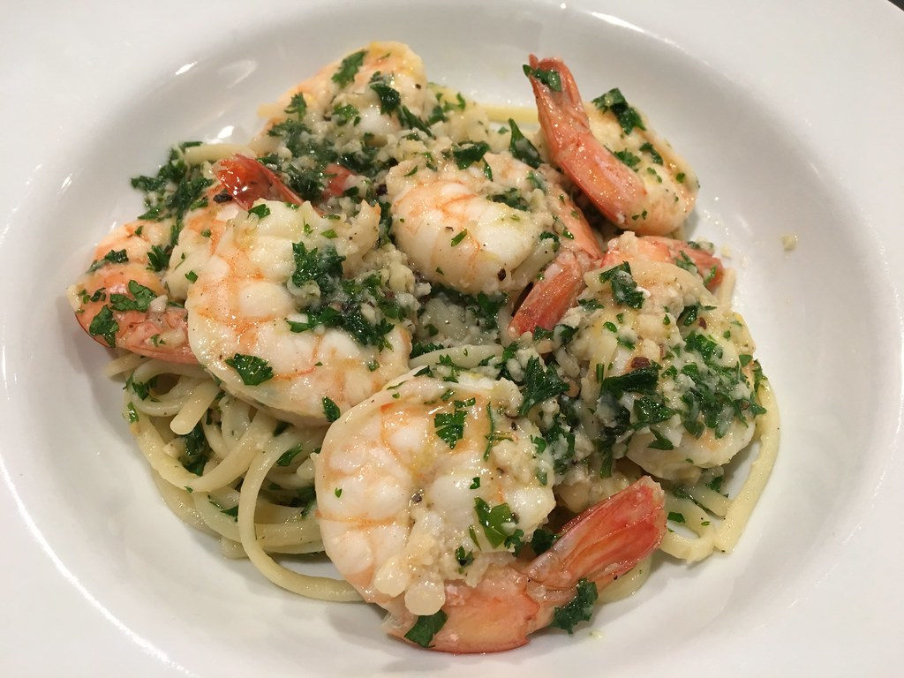

Shrimp Scampi

My own Shrimp Scampi and Linguini flickr photo by Neeta Lind
Home
Description
This shrimp scampi recipe is the perfect dinner for any night of the week. It brings a little bit of elegance to your home dinner table. With strong flavors of garlic, lemon and white wine; it is sure to please!
Ingredients
- 1 3/4 Pounds Large or Extra-Large Shrimp, shelled
- 1/3 Cup Fresh Chopped Parsley
- Fresh lemon juice of half a lemon
- 1/2 cup of dry white wine (I prefer Chardonnay) or chicken broth
- 3/4 Tsp kosher salt, or to taste
- 2 Tablespoons Butter
- 2 Tablespoons of Extra Virgin Olive Oil
- Noodles or crispy bread
- 4 Garlic cloves, minced
- 1/8 Tsp of Crushed Red Pepper Flakes, or to taste
- Black pepper, to taste
-